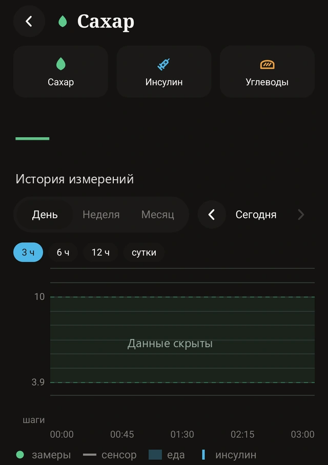
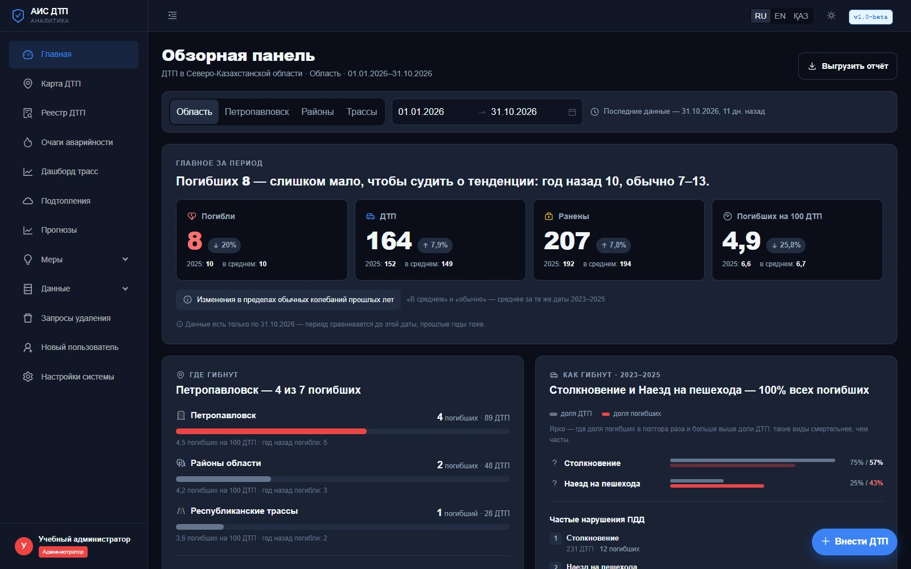
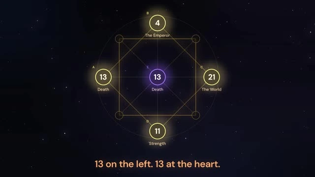
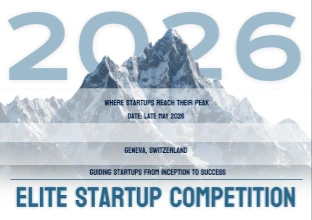
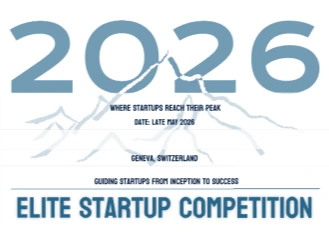
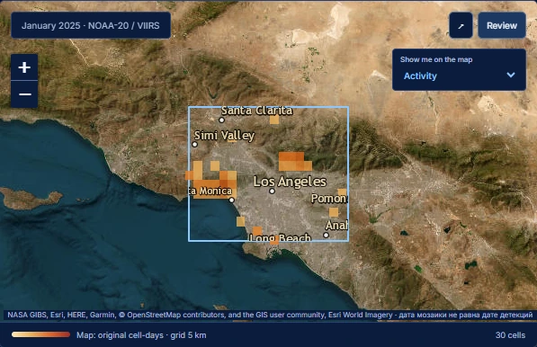
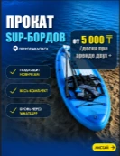

Галерея работ
Все
Видео
Интерфейсы
Графика
Destiny Matrix Lab YouTube · 7 видео и 3 Shorts ↗
Мой YouTube-канал с атмосферными видео и англоязычными объясняющими роликами. При создании видео использую Claude.
Атмосферные видео
Ночное кафе, японский lo-fi и осенний dark ambient.
Объясняющие ролики
Длинные видео, в которых обложки, титры и схемы помогают следить за объяснением.

WatchB8 Смарт-часы · Дневник сахара ↗
Приложение для часов и кольца B8. Данные об активности и дневник сахара находятся в разделе «Здоровье».
На обоих экранах заполнены демонстрационные данные.
Главный экран
Статус подключения, показание глюкозы, питание, шаги, пульс и кислород. Сохранена нижняя навигация приложения.
Дневник сахара
Текущее показание, переключатели периода и линия замеров. Легенда обозначает данные сенсора, еду и инсулин.
Астана, 5 июля Видео · Съёмка и монтаж ↗
Дневные улицы, архитектура и вечерние огни в городской зарисовке на 32 секунды.
Съёмка и монтаж — Оксана Леонтьева
Город днём и ночью
Дневной план — улица и здания с высоты. Ночной план — огни города и тот же титр даты.

Аналитика ДТП Интерфейс · ГИС-платформа ↗
ГИС-платформа для анализа аварийности в Северо-Казахстанской области.
Моя роль в команде — фронтенд и анализ данных.
Карта и обзорная панель
На карте можно сменить представление и отфильтровать события. Обзорная панель нужна для сравнения периодов. На скриншотах учебные данные.
Карта происшествий Обзорная панель
13 in Your Destiny Matrix? Видео · Обложка и графика ↗
Обложка и графика для объясняющего ролика Destiny Matrix Lab.
От обложки к кадру
На обложке крупная цифра 13 читается даже в маленьком превью. 
В самом ролике цвет помогает найти нужный узел схемы.

Elite Startup Competition Графика · 9 вариантов афиш и баннеров ↗
Серия афиш для конкурса стартапов. Одна тема — путь к вершине — развёрнута в разных стилях и форматах.
Гора и «2026»
Светлая серия с крупными цифрами. Гору можно показать фотографией или оставить только контур.
Горизонтальный формат Вертикальный формат 
Контурная версия
Фотографические варианты
В одном варианте направление задаёт дорога, в другом — мягкий розовый слой поверх горного пейзажа.
Геометрические вершины
В иллюстративной версии использованы угловатые формы, холодные оттенки и пиктограммы.
Золотая линия
Тёмная серия с тонким золотым рельефом и декоративной рамкой.
AI SANA Интерфейс · Веб-макеты ↗
Серия университетских веб-макетов для AI SANA.
Агенты и курсы
На главной — знакомство с ИИ-агентами, на отдельной странице — список курсов.
Новости и статья
Карточки дают быстрый обзор публикаций, а отдельный макет показывает, как устроена страница статьи.

Атлас пожарной активности Интерфейс · NASA Space Apps ↗
Командный проект KU-group для NASA Space Apps.
От месяца к карте
В календаре можно сравнить месяцы и выбрать период, а на карте — посмотреть, где спутник зарегистрировал активность.
Календарь наблюдений Спутниковая карта

Прокат SUP-бордов Графика · Карточки для соцсетей ↗
Серия карточек для проката в единой синей палитре. Жёлтый акцент выделяет цены и действия.
Kozybayev University Графика · Информационные материалы ↗
Информационные материалы для KU ML School и Центра искусственного интеллекта.